第9章
沿运动轨道的物体运动；回归点运动
命题43 问题30
使一物体沿一环绕力的中心转动的曲线运动，其方式与另一物体沿同一静止曲线运动相同。
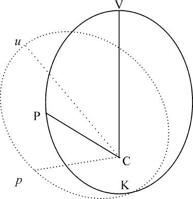
在固定轨道VPK上，令物体P由V向K作环绕运动。由中心C连续作Cp 等于CP，使角VCp 正比于角VCP；直线Cp 掠过的面积比直线CP在同一时间里掠过的面积VCP，等于直线Cp 掠过的速度比直线CP掠过的速度，即等于角VCp 比角VCP，所以其比值为已知，因而正比于时间。因为在固定平面上直线Cp 掠过的面积正比于时间，所以物体在适当的向心力作用下，可以与点P一起在曲线上旋转，而此曲线则由同一个点P以刚刚阐述过的方法在一个固定平面上画出。使角VCu 等于角PCp ，直线Cu 等于CV，图形u Cp 等于图形VCP，则物体总是位于点P，沿旋转图形u Cp 的图边运动，画出其（旋转）弧up 所需时间，与另一物体P在固定图形VPK上画出相似且相等的弧VP所用时间相同。然后，由命题6推论V找出使物体得以沿着由点P在固定平面上画出的轨道旋转的向心力，问题即解决。
完毕。
命题44 定理14
使一个物体沿固定轨道运动的力，与使另一个物体沿一相同的旋转轨道作相同运动的力的差，反比于其共同高度的三次方而变化。
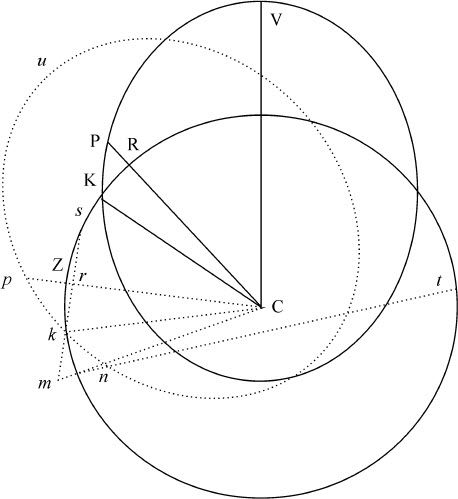
令固定轨道上的部分VP，PK相似且相等于旋转轨道上的部分up ，pk ；设点P与K间的距离为最小。由点k 作垂线kr 到直线p C，并延长到m ，使mr 比kr 等于角VCp 比角VCP。因为物体的高度PC与p C，KC与k C总是相等，所以线段PC与p C的增量或减量总是相等；如果把两个物体在处所P和p 的运动分别分解为二（由运动定律的推论Ⅱ），其一指向中心，或沿着直线PC，p C，而另一个则与前一个相垂直，沿着垂直于直线PC，p C的方向；则指向中心的运动相等，而物体p 的横向运动与物体P的横向运动的比，等于直线p C的角运动比直线PC的角运动；即等于角VCp 比角VCP。所以，在同一时间里，物体P由两方面的运动到达点K，而物体p 则以指向中心的相同运动由点p 相等地运动到C；所以，当该时间终止时，它将位于通过点k 与直线p C相垂直的直线mkr 上某处，而其横向运动将使它获得一个到直线p C的距离，该距离比另一物体P 所获得的到直线PC的距离，等于物体p 的横向运动比另一个物体P的横向运动。由于kr 等于物体P到直线PC的距离，而mr 比kr 等于角VCp 比角VCP，即，等于物体p 的横向运动比物体P的横向运动，所以，在该时间终了时，物体p 将位于处所m 。之所以如此，是因为如果物体p 和P在直线pc 和PC上作相等的运动，则在该方向上受到相等的作用力。但如果取角p Cn 比角p Ck 等于角VCp 比角VCP，n C等于k C，在此情形下，物体p 在时间终了时将的确在n ；如果n Cp 大于角k Cp ，即，如果轨道upk 以大于直线CP被携带前进速度的二倍运动，不论是前进或是后退，则物体p 比物体P受到的作用力大。如果轨道的后退运动较慢，则受到的力小。二力的差将正比于在给定时间间隔内物体受该力差的作用所通过的处所的间距mn 。关于中心C以间距cn 或ck 为半径作圆与直线mr ，mn 的延长线相交于s ，t 则乘积mn ·mt 等于乘积mk ·ms ，所以mn 等于
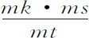
。但由于在给定时间里，三角形pck ，p Cn 的大小已知，而kr 和mr ，以及它们的差mk ，它们的和ms ，反比于高度p C，所以，乘积mk ·ms 反比于高度p C的平方。而且，mt 正比于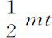
，即正比于高度p C。这些都是新生线段的最初比值。所以，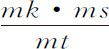
，即新生的短线段mn ，以及与它成正比的力的差，反比于高度p C的立方。证毕。
推论Ⅰ．在处所P与p ，或K与k 的力的差，比物体在与物体P于固定轨道上掠过弧PK相同的时间内由R做圆周运动到K所受到的力，等于新生线段mn 比新生弧PK的正矢，即等于
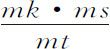
比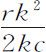
，或等于mk ·ms 比rk 的平方；也就是说，如果取给定量F和G的比值等于角VCP比角VCp ，则二力之比等于GG-FF比FF。所以，如果由中心C以任意半径CP或Cp 作一圆周扇形等于面积VPC，在任意给定的时间内物体沿固定轨道作环绕运动其到中心的半径所掠过的面积，则两个力，其一使物体P沿固定轨道运动，另一使物体p 沿运动轨道运动，它们的差，与在面积VPC被掠过的同时使另一物体到中心的半径均匀掠过该扇形的向心力的比，等于GG-FF比FF。因为该扇形与面积p Ck 的比等于它们被掠过的时间的比。推论Ⅱ．如果轨道VPK是椭圆，其焦点为C，上回归点是V，设有另一椭圆upk 相似且相等于它，使得pc 总是等于PC，角VCp 比角VCP为给定比值G比F；令A等于高度PC或p C，2R等于椭圆的通径，则使物体在运动椭圆轨道上运动的力将正比于
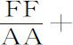
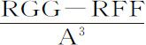
，反之亦然。令使物体沿固定轨道运动力以量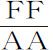
表示，则在V的力为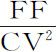
。然而，使一物体在距离CV处以与物体在椭圆轨道上V处相同速度做圆周运动的力，比在回归点V作用于作椭圆运动的物体的力，等于该椭圆通径的一半比该圆直径的一半CV，所以等于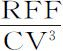
；而与此相比等于GG－FF比FF的力，等于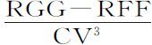
；这个力（由本命题推论Ⅰ）正是物体P在V处沿固定椭圆VPK运动所受到的力与物体p 在运动椭圆upk 上所受的力的差。由本命题知，在任意其他高度A上该差与其自身在高度CV上的比等于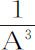
比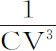
，因而该差在每一高度A上都正比于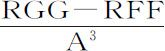
。所以在物体沿固定椭圆VPK所受的力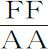
上，加上差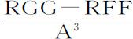
，其和就是物体在同一时刻沿运动椭圆upk 运动所受到的力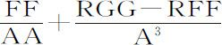
。推论Ⅲ．如果固定轨道VPK是椭圆，其中心在力的中心C，设有一运动椭圆upk 与之相似、相等而且共心；该椭圆的通径是2R，横向通径即长轴是2T；而且总有角VCp 比角VCP等于G比F，则在相同时间里，使物体在固定轨道和运动轨道上运动的力分别等于
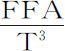
和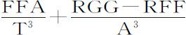
。推论Ⅳ．如果令物体的最大高度CV为T，轨道VPK在V处的曲率半径，即弯曲度相同的圆的半径为R，使物体在处所V沿任意固定曲线VPK运动的向心力为
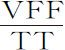
，在另一处所P的力为X，高度CP为A，且取G比F等于角VCp 比角VCP；则一般地，使同一物体在同一时间沿同一曲线upk 作同一种圆运动的向心力，等于力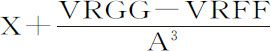
的和。推论Ⅴ．给定物体沿固定轨道的运动，则其绕力的中心的角运动也以给定比值增加或减少，所以，物体在新的向心力作用下所环绕的新的固定轨道可以求出。
推论Ⅵ．如果作不定长度的直线VP垂直于位置已定的直线CV，作CP及与之相等的Cp ，使角VCp 与角VCP有给定比值，则使物体沿点p 连续画出的曲线Vpk 运动的力，将反比于高度Cp 的立方。因为物体P在没有力作用于它时，其惯性使它沿直线VP匀速前进，在加上指向中心C且反比于高度CP或Cp 的立方的力后，物体（如刚才证明的）将偏离其直线运动而进入曲线Vpk 。但该曲线Vpk 与命题41推论Ⅲ中的曲线VPQ相同，物体在这种力吸引下将直接上升。
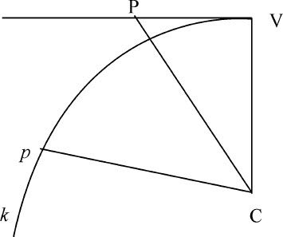
命题45 问题31
求非常接近于圆的轨道的回归点的运动。
本问题用算术方法求解，把物体在固定平面上沿运动椭圆（如在上述命题的推论Ⅱ和Ⅲ中那样）运动所画出的轨道，简化为求回归点的轨道图形；然后找出物体在固定平面上所画轨道的回归点。但要使轨道的图形相同，需使轨道得以画出的向心力相互之间的相同在高度上成正比。令点V是最高的回归点，T是最大高度CV，A是其他高度CP或Cp ，X是高度差CV-CP；则使物体沿绕其焦点C转动的椭圆运动（如推论Ⅱ那样）的力，在推论Ⅱ中等于
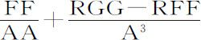
，即等于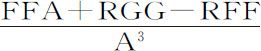
，以T－X代替A，即变为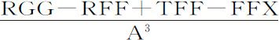
。用类似方法，任何其他向心力都可以化为分母是A3 的分数，而分子可以通过合并同类项变为相似。这可以通过举例加以说明。例1．设向心力是均匀的，因而正比于
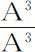
，或者，在分子中以T－X代替A，正比于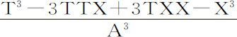
。然后合并分子中的对应项，即使已知项与已知项相比，未知项与未知项相比，它变为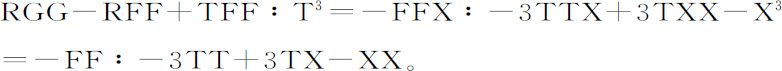
由于假设该轨道极为接近于圆，令它与圆相重合。因为在此情形下R与T相等，X无限缩小，则最后的比为
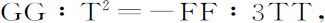
以及
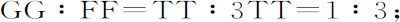
所以，G比F，即角VCp 比角VCP，等于
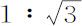
。由于在固定椭圆中，当物体由上回归点落到下回归点时，将掠过一个，如果可以这样说的话，180°的角，而另一个在运动椭圆中的物体，处于我们所讨论的固定平面上，在其由上回归点落到下回归点时，掠过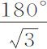
的角VCp 。之所以如此是因为这个由受均匀向心力作用的物体画出的轨道相似于物体在固定平面上沿运动椭圆运动所画出的轨迹。通过这种项的比较，使这些轨道相似，但这不是普适的，仅当它们非常近似于圆时才成立。所以，一个物体，当它在均匀向心力作用下沿近圆轨道运动，由上回归点到下回归点总是关于中心掠过一个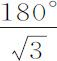
，或103°55′23″的角，然后再由下回归点掠过相同角度回到上回归点；循环往复以至无限。例2．设向心力在正比于高度A的任意次幂，例如，A n －3 ，或
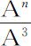
；在此，n －3与n 表示幂的任意指数，可以是整数或分数，有理数或无理数，正数或负数。用我的收敛级数方法把分子A n 或（T－X） n 化为不确定级数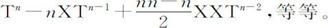
将这些项与另一个分子的项
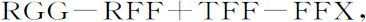
作比较，它即变为
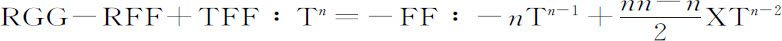
，等等，当轨道趋近于圆时取最后比值，上式变为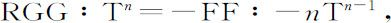
或
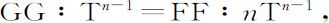
而且
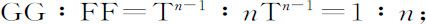
所以G比F，即角VCp 比角VCP，等于1比
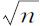
。由于物体在椭圆中由上回归点落到下回归点时掠过的角VCP为180°，而在由一物体受正比于幂A n －3 的向心力作用下运动所画出的近圆轨道上，物体由上回归点下落到下回归点时掠过的角VCp 等于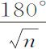
，物体由下回归点返回上回归点时又重复该角，循环往复以至无限。如果向心力正比于物体到中心的距离，即正比于A，或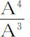
，则n 等于4，而 等于2；所以上下回归点之间的角度为
等于2；所以上下回归点之间的角度为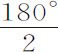
，或90°。所以，物体在掠过圆的四分之一部分后到达下回归点，掠过下一个四分之一部分后又到达上回归点，循环往复以至无限。这种情形也出现在命题10中。因为受这种向心力作用的物体沿固定椭圆运动，轨道的中心就是力的中心。如果向心力反比于距离，即正比于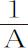
或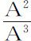
，则n ＝2，所以上下回归点间的角度为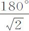
，或127°16′45″；所以受这种向心力作用的物体将持续重复这一角度，不断由上回归点到下回归点，又由下回归点到上回归点。而如果向心力反比于高度的11次幂的4次方根，即反比于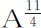
，因而正比于 或正比于 ，n 等于 ，则 等于360°；所以物体离开其上回归点连续运动，在完成一个环绕周期后到达下回归点，再环绕一周后又回到上回归点，如此不断地重复。例3．取m 和n 表示高度的幂的指数，b 和c 为任意给定数，设向心力正比于 ，即正比于 ，或（由上述收敛级数方法）正比于
比较分子中的项，得到
，等等。当轨道接近于圆时取最后比值，得到
以及， 。
令最大高度CV或T在算术上等于1，则该比例式变为， 。因而G比F，即角VCp 比角VCP，等于1比 。所以，由于在固定椭圆上，角VCP介于上下回归点之间，为180°，而角VCp 在由物体受正比于 的向心力作用画出的轨道上介于相同的回归点之间，将等于一个 的角。由相同的理由，如果向心力正比于 ，则回归点之间的角等于
对于较困难的情形也可以用相同的方法求解这种问题。向心力所正比的量必须分解成分母为A3 的收敛级数。然后设该运算中出现的已知分子与未知分子的比，等于分子 比同一分子中的未知部分。再舍去多余的量，令T为1，即可得到G与F的比例式。
推论Ⅰ．如果向心力正比于高度的任意次幂，则这个幂可以由回归点的运动求出；反之亦然。即，如果物体返回同一个回归点的整个角运动，比其环绕一周，或360°的角运动，等于数m 比数n ，且高度为A，则力将正比于高度A的幂 ，该幂的指数是 。这种情形出现在第二个例子中。由此易于理解该力在其距中心最远处的减少最多不能超过高度比的立方。否则，受这种力作用的物体一旦离开回归点开始下落，将再也不能到达下回归点或最低高度，而是沿着命题41推论Ⅲ所讨论的曲线落向中心。但如果它离开下回归点后能稍稍上升，它将决不会回到上回归点。而是沿着同一推论和命题45推论Ⅳ所讨论的曲线无限上升。所以，当在距中心最远处力的减小大于高度比的立方时，物体一旦离开其回归点，便或是落向中心，或是逃逸到无限远，这由其开始运动时是下落或是上升来决定。但如果在距中心最远处力的减小或是小于高度比的立方，或是随高度的任意比率而增加，则物体决不会落向中心，而是在某一时刻到达下回归点；反之，如果物体交替地由其一个回归点到另一个回归点不断上升或下降，决不到达中心，则力或是在距中心最远处增大，或是其减小小于高度比的立方；物体由一个回归点到另一个回归点的时间越短，该力与该立方比值的比就越大。如果物体回到或离开上回归点前经过8，或4，或2，或 周的上升和下降，即，如果m 比n 为8，或4，或2，或 比1，则 为 ，或 ，或 或 ；则力正比于 ，或 ，或 ，或 ，即反比于 ，或 ，或 ，或 。如果物体每运行一周回到同一个回归点，该回归点没有移动，则m 比n 等于1比1，所以 等于A－2 ，或 ；所以力的减小是高度的平方比值，与以前证明相同。如果物体经过四分之三，或三分之二，或三分之一，或四分之一周的运行回到同一个回归点，则m 比n 等于 或 或 或 比1，所以 等于 或 或A9－3 或A16－3 ；所以力反比于 或 ，或正比于A6 或A13 。最后，如果物体由其下回归点再回到同一个下回归点运行了整整一周又零三度，因而该回归点每当物体运行一周后向前移三度，则m 比n 等于363°比360°，或121比120，所以 等于 ，因而向心力反比于 ，或近似反比于 。所以向心力的减小比率略大于平方比率，但它接近平方比率比接近立方比率要强 倍。
推论Ⅱ．如果一个物体受反比于高度平方的向心力作用，沿焦点位于力的中心的椭圆运动；有一个新的外力增强或减弱这个向心力，则该外力引起的回归点运动将（由第三个例子）可以求出；反之：如果使物体沿椭圆环绕的力正比于 ，而外力正比于c A，则净剩力正比于 ，（由第三个例子知）b 等于1，m 等于1，n 等于4，则两回归点间角度等于 。设该外力比使物体环绕椭圆的另一个力小357. 45倍，即c 为 ，A或F等于1；则 等于 或180.7623°，即180°45′44″。所以，物体离开上回归点后，要运动180°45′44″才到达下回归点，再重复这一角运动回到上回归点，所以每运行一周上回归点向前移动1°31′28″。月球回归点的移动约为该数值的一倍。
物体沿其平面通过力的中心的轨道的运动就讨论到此。现在要讨论在偏心平面上的运动。因为过去研究各物体运动的作者在考虑这类物体的上升或下落时，不是仅限于垂直方向上，而是涉及给定平面的所有倾斜角度；出于同样理由，我们在此要研究受任意力作用倾向中心的物体在偏心平面上的运动。假定这些平面完全光滑平坦，对在其上运动的物体没有任何阻碍。而且，在这些证明中，我将不用物体在其上滚动或滑动，因而是物体的切面的平面，而代之以与它们相平行的平面，物体的中心在其上运动并画出轨道。此后我还将用相同方法研究弯曲表面上的运动。